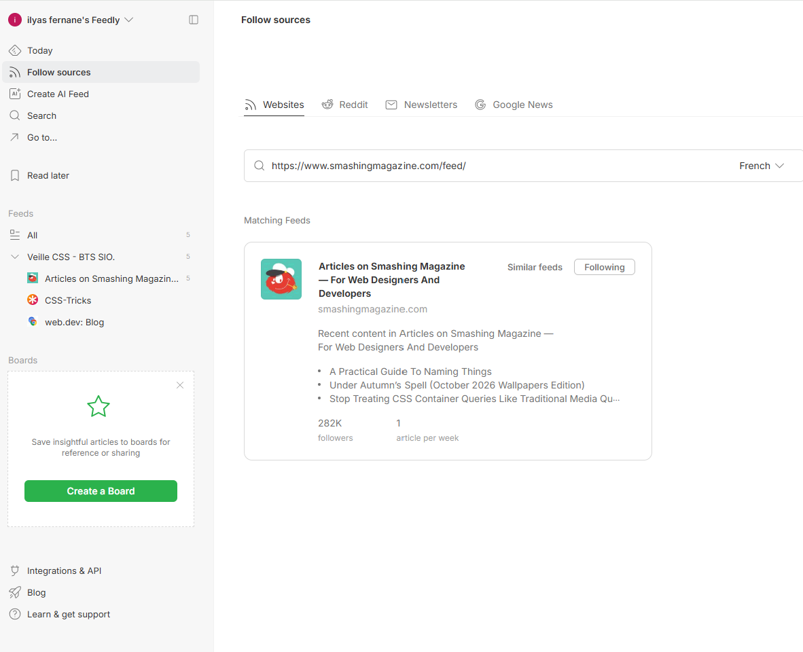

CSS-Tricks
Tutoriels et articles techniques consacrés au CSS.
Consulter la source ↗Veille technologique
Dans le cadre de mon développement professionnel, j'effectue une veille technologique consacrée aux évolutions du CSS et à leurs applications dans le développement web moderne.
L'objectif est de découvrir de nouvelles fonctionnalités, comprendre leurs avantages et étudier leur utilisation dans mes projets.
J'utilise Feedly, un agrégateur de flux RSS, afin de centraliser les publications de plusieurs sites spécialisés.
Je prévois de consulter ces sources toutes les deux semaines, de sélectionner les articles pertinents et de vérifier les informations dans la documentation MDN.
Tutoriels et articles techniques consacrés au CSS.
Consulter la source ↗Actualités et évolutions des technologies web.
Consulter la source ↗Articles sur le développement frontend et le responsive design.
Consulter la source ↗Voici trois évolutions du CSS moderne que j'ai sélectionnées pour ma veille technologique.
L'imbrication native des règles CSS pour mieux organiser les feuilles de style.
Fiche documentaire rédigée Consulter la fiche ↗Adapter les composants selon la taille de leur conteneur.
Fiche documentaire rédigée Consulter la fiche ↗Adapter le style d'un élément selon la présence ou l'état d'autres éléments.
Fiche documentaire rédigée Consulter la fiche ↗Capture de mon agrégateur RSS présentant les différentes sources suivies.
